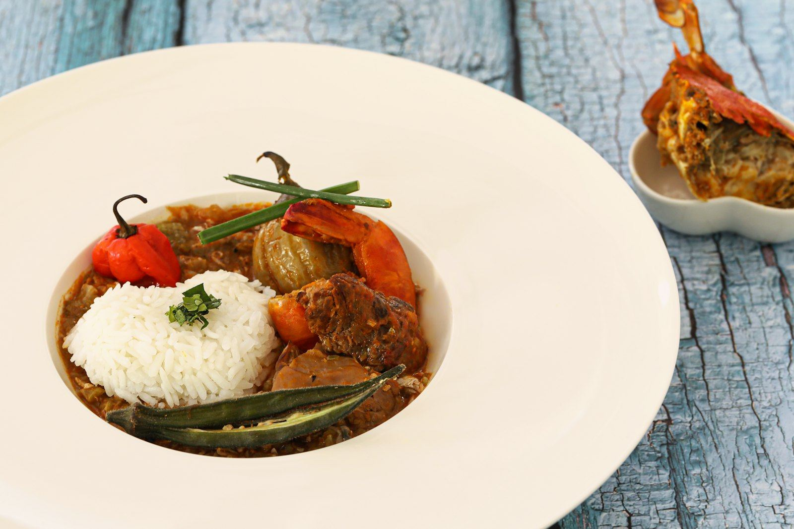
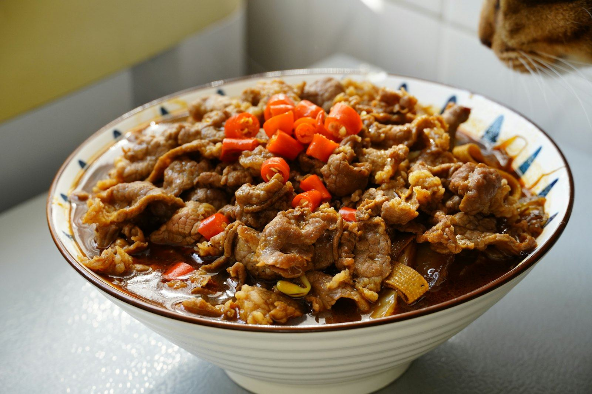
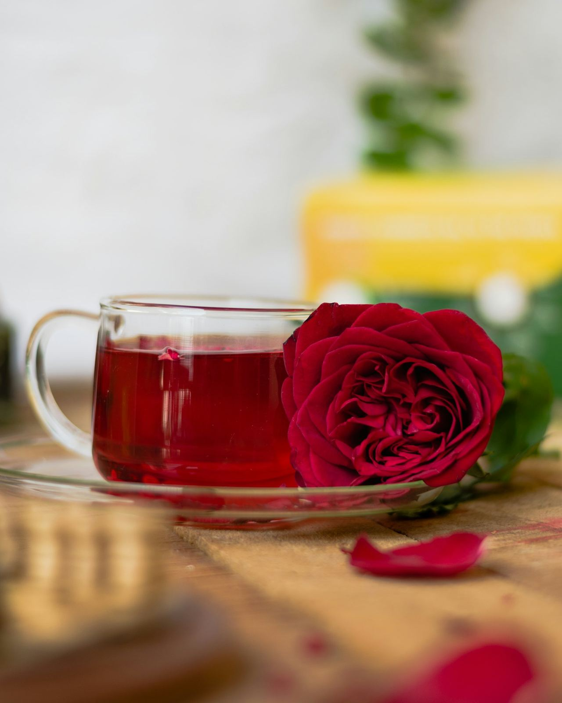
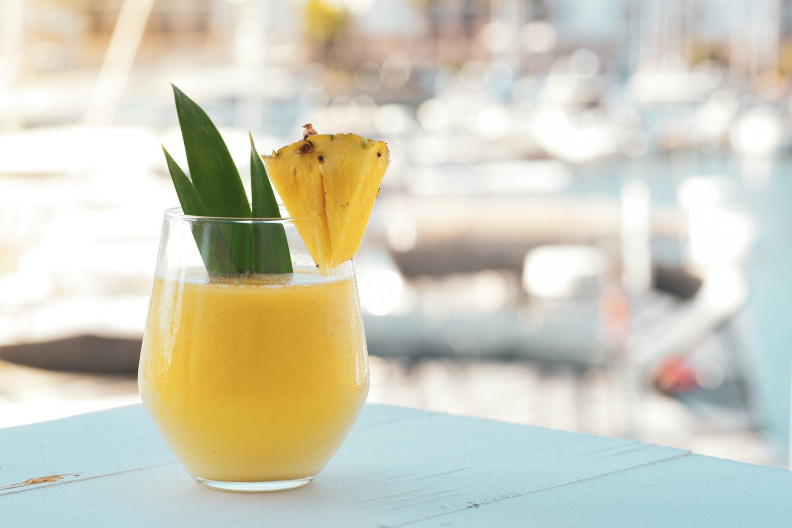
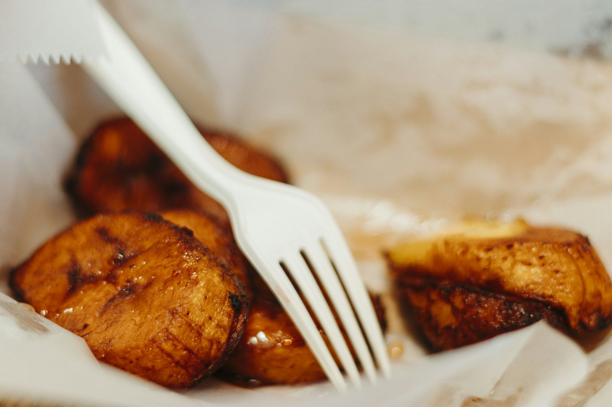
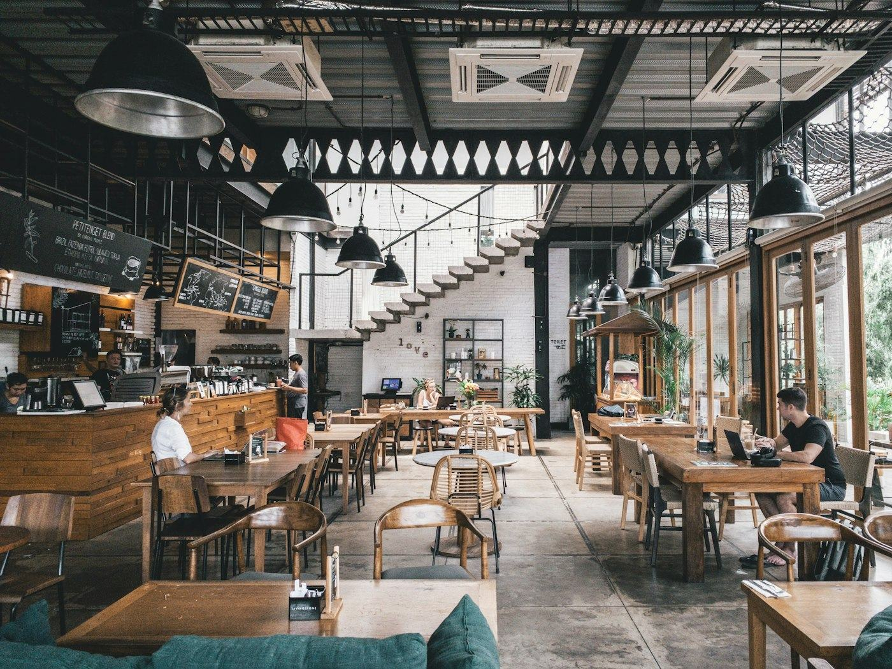

Les saveurs de l'Afrique, servies avec le sourire.
Cuisine gabonaise et africaine, cocktails maison et ambiance cosy aux couleurs du continent. Moins de 15 000 FCFA par personne.


Brunchchaque dimanche
Ce qu'on vient manger chez Boko's
Poulet nyembwe
Poulet mijoté à la sauce noix de palme, comme à la maison
8 500 FCFA
Bœuf sauce odika
Le « chocolat » gabonais : sauce à l'amande de mangue sauvage
9 500 FCFA
Capitaine braisé
Poisson entier, marinade citron-piment, sur feuille de bananier
11 000 FCFA
Bissap maison
Fleur d'hibiscus, menthe, servi bien frais
1 500 FCFAL'Afro Brunch
Beignets, plantain, grillades, fruits frais, bissap et gingembre à volonté : le rendez-vous gourmand du dimanche, de 11 h à 15 h.



Un cadre cosy aux couleurs de l'Afrique
Dans la ruelle de Canal 7 à Okala, face au lavage : une salle chaleureuse, du wax, de la bonne musique et une équipe aux petits soins.
Avis de nos clients
« Le brunch du dimanche est devenu notre rituel. Le poulet nyembwe et le bissap à volonté, un bonheur ! »
« Cadre cosy, musique au top et un capitaine braisé parfaitement assaisonné. Service souriant. »
« Ils ont tout organisé : menu, déco wax, gâteau. Mes invités en parlent encore. »
Suivez-nous sur Instagram : @boko.slbv
Une table vous attend à Okala
Réservez en ligne ou par téléphone au 066 08 87 08. Les groupes et l'Afro Brunch se réservent à l'avance.